The DAMisc package has evolved over the past decade to include many of the functions I use when teaching applied stats to social scientists. I think many of the functions might be useful more broadly so I thought it would be worth discussing the functionality in a sort of thematic way here. The functions do fall into a few different thems.
- Functions that attempt to figure out whether and what kind of unmodeled non-linearities exist.
- Functions for investigating interactions in different settings (linear models and binomial GLMs).
- Functions for post-model evaluation and examination of non-linear models (GLMs, ordinal data models and unordered data models).
- Functions for both frequentist and Bayesian Alternating Least Squares Optimal Scaling (ALSOS).
I’ll talk about each of these below.
Evaluating Un-modeled Non-linearities.
One of the problems I find most interesting in applied regression analysis is evaluating the extent to which the linear, additive functional form is sufficient to capture the systematic dependence of the outcome on the explanatory variables. For the purposes of this example, we’ll use data from the carData package. Here’s a multiple linear regression model where all covariates enter the model linearly and additively.
data(Prestige, package='carData')
lin.mod <- lm(prestige ~ income + education + women + type, data=Prestige)
summary(lin.mod)
#>
#> Call:
#> lm(formula = prestige ~ income + education + women + type, data = Prestige)
#>
#> Residuals:
#> Min 1Q Median 3Q Max
#> -14.7485 -4.4817 0.3119 5.2478 18.4978
#>
#> Coefficients:
#> Estimate Std. Error t value Pr(>|t|)
#> (Intercept) -0.8139032 5.3311558 -0.153 0.878994
#> income 0.0010428 0.0002623 3.976 0.000139 ***
#> education 3.6623557 0.6458300 5.671 1.63e-07 ***
#> women 0.0064434 0.0303781 0.212 0.832494
#> typeprof 5.9051970 3.9377001 1.500 0.137127
#> typewc -2.9170720 2.6653961 -1.094 0.276626
#> ---
#> Signif. codes: 0 '***' 0.001 '**' 0.01 '*' 0.05 '.' 0.1 ' ' 1
#>
#> Residual standard error: 7.132 on 92 degrees of freedom
#> (4 observations deleted due to missingness)
#> Multiple R-squared: 0.8349, Adjusted R-squared: 0.826
#> F-statistic: 93.07 on 5 and 92 DF, p-value: < 2.2e-16We might wonder whether any of the variables have non-linear trends that are not captured by the model. We could use the crPlots function from the car package to figure this out.
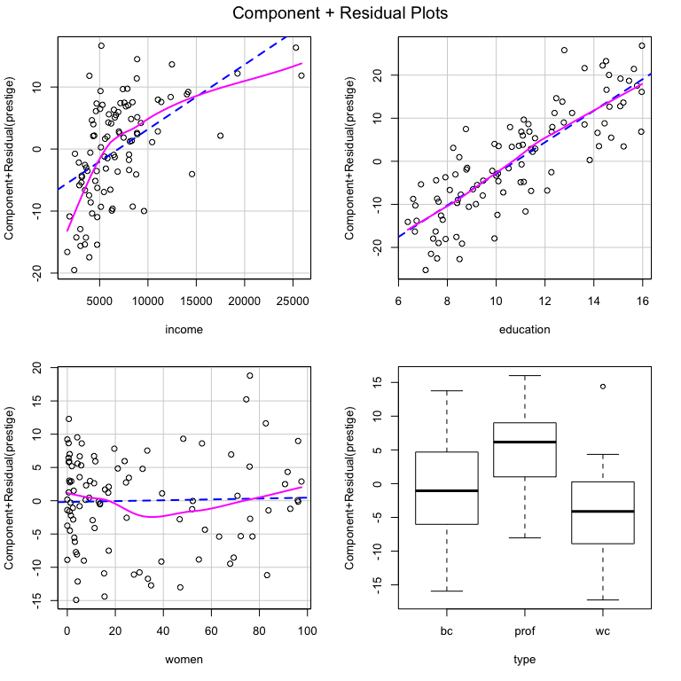
There certainly appears to be non-linearity in the relationships between income and prestige as well as between women and prestige. If we wonder whether that is statistically significant, we could use the crTest function from the DAMisc package to test the significance of the difference between the OLS and local polynomial regressions in the C+R plots.
library(DAMisc)
crTest(lin.mod)
#> RSSp RSSnp DFnum DFdenom F p
#> income 4678.99 4093.63 1.903 94.097 7.069 0.002
#> education 4678.99 4656.86 0.946 95.054 0.478 0.481
#> women 4678.99 4483.03 0.869 95.131 4.785 0.036Here, the test suggests that the income and women relationships both have significant non-linear relationships with prestige. The next thing to figure out is what that non-linearity looks like. We could use the boxTidwell function from the car package to estimate the transformation parameter for income. There is also a crSpanTest function that looks at the same test as above, but over the reasonable range of the span parameter in the local polynomial regression.
car::boxTidwell(prestige ~ income, ~ women + type + education, data=Prestige)
#> MLE of lambda Score Statistic (z) Pr(>|z|)
#> -0.29939 -4.4858 7.265e-06 ***
#> ---
#> Signif. codes: 0 '***' 0.001 '**' 0.01 '*' 0.05 '.' 0.1 ' ' 1
#>
#> iterations = 7Here, the MLE of λ, the transformation parameter, is -0.299. We might wonder whether that’s close enough to the log transform, which is what is used for the 0 power transform. We could figure that out by imposing the transformation in the boxTidwell function.
car::boxTidwell(prestige ~ log(income), ~ women + type + education, data=Prestige)
#> MLE of lambda Score Statistic (z) Pr(>|z|)
#> -1.5441 -1.4096 0.1587
#>
#> iterations = 4Since the proposed additional transformation parameter is not significant, we can be confident that the log transform is sufficient. The women variable likely needs a polynomial since the non-linearity is not simple and monotone. We could use a second degree polynomial, but the NKnots and NKnotsTest functions can help figure this out. Let’s look at the NKnots function first.
NKnots(prestige ~ log(income) + type + education, var="women",
data=Prestige, degree=3, includePoly = TRUE, plot=TRUE)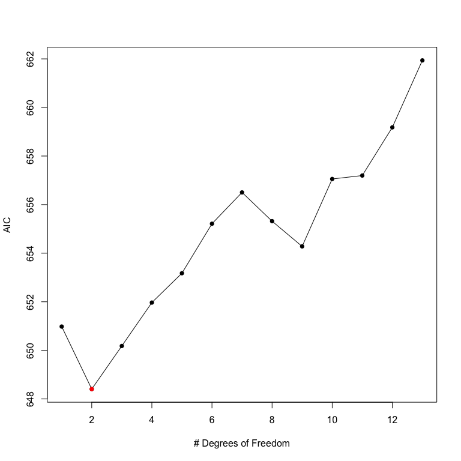
The NKnots function calculates the AIC for the first up to degree polynomials and the b-splines with 1:(DF - degree) internal knots. The AIC is plotted, and in this case it is clear that the second-order polynomial generates the smallest AIC value. To see whether these differences are significant, we can use the NKnotsTest function.
options(width=100)
NKnotsTest(prestige ~ log(income) + type + education, var="women",
data=Prestige, degree=3, target=2)
#> F DF1 DF2 p(F) Clarke Pr(Better) p(Clarke) Delta_AIC Delta_AICc Delta_BIC
#> DF=2 vs. DF=1 4.348* 1 91 0.040 41 0.418 0.129 2.574 2.201 -0.011
#> Target
#> DF=2 vs. DF=3 0.208 1 90 0.650 77* 0.786 0.000 (T) 1.774 2.202 4.359
#> DF=2 vs. DF=4 0.200 2 89 0.819 79* 0.806 0.000 (T) 3.561 4.472 8.731
#> DF=2 vs. DF=5 0.371 3 88 0.774 82* 0.837 0.000 (T) 4.769 6.221 12.524
#> DF=2 vs. DF=6 0.266 4 87 0.899 88* 0.898 0.000 (T) 6.807 8.860 17.147
#> DF=2 vs. DF=7 0.337 5 86 0.889 83* 0.847 0.000 (T) 8.096 10.812 21.021
#> DF=2 vs. DF=8 0.755 6 85 0.607 76* 0.776 0.000 (T) 6.912 10.354 22.422
#> DF=2 vs. DF=9 1.037 7 84 0.411 80* 0.816 0.000 (T) 5.874 10.109 23.968
#> DF=2 vs. DF=10 0.808 8 83 0.597 85* 0.867 0.000 (T) 8.649 13.747 29.329
#> DF=2 vs. DF=11 0.898 9 82 0.531 79* 0.806 0.000 (T) 8.791 14.823 32.055
#> DF=2 vs. DF=12 0.800 10 81 0.629 83* 0.847 0.000 (T) 10.774 17.814 36.624
#> DF=2 vs. DF=13 0.656 11 80 0.775 85* 0.867 0.000 (T) 13.531 21.657 41.966In the NKnotsTest function, you have to specify a target which is the degrees of freedom of the proposed model. In this case, we pick 2. All smaller and bigger models up to the specified degrees of freedom are tested. If using the F-test, the idea is that all smaller models should be significantly worse (i.e., have small p-values) and all bigger models should not be significantly better (i.e., have big p-values). We can see that this is true, looking at the p(F) column. You could also use the Clarke test, which is implemented with the clarke_test function from the clarkeTest package, which I also built and maintain, or AIC, AIC with a small-sample correction or BIC. The logic of using these other measures is basically the same.
Now that we are confident about the correct (additive) functional form of the variables, we could go on and interpret them as we usually would (or make an effect plot).
Evaluating Interactions
Lots has been written recently in Political Science regarding interactions, in both linear and non-linear (generally binomial GLM) models. First, we’ll tackle linear model interactions.
Linear Model Interactions
We can add an interaction to the model. Here, we can use the same data as above, though we’ll use the linear, conditional specification. There are two main functions that work in linear models - one for evaluating interactions between quantitative and qualitiative variables and one for evaluating interactions between two quantitative variables. Let’s look at the quantitative-qualitative interaction first.
Prestige$income <- Prestige$income/1000
int.mod1 <- lm(prestige ~ education + income*type + women, data=Prestige)
summary(int.mod1)
#>
#> Call:
#> lm(formula = prestige ~ education + income * type + women, data = Prestige)
#>
#> Residuals:
#> Min 1Q Median 3Q Max
#> -12.632 -4.518 1.057 3.850 18.171
#>
#> Coefficients:
#> Estimate Std. Error t value Pr(>|t|)
#> (Intercept) -10.07694 5.01000 -2.011 0.0473 *
#> education 2.80361 0.59233 4.733 8.18e-06 ***
#> income 3.85495 0.58655 6.572 3.15e-09 ***
#> typeprof 27.54962 5.40962 5.093 1.93e-06 ***
#> typewc 3.43457 5.36630 0.640 0.5238
#> women 0.07648 0.03117 2.453 0.0161 *
#> income:typeprof -3.00851 0.57540 -5.229 1.10e-06 ***
#> income:typewc -1.09486 0.86374 -1.268 0.2082
#> ---
#> Signif. codes: 0 '***' 0.001 '**' 0.01 '*' 0.05 '.' 0.1 ' ' 1
#>
#> Residual standard error: 6.284 on 90 degrees of freedom
#> (4 observations deleted due to missingness)
#> Multiple R-squared: 0.8746, Adjusted R-squared: 0.8649
#> F-statistic: 89.7 on 7 and 90 DF, p-value: < 2.2e-16We can make sure that the interaction is significant with the Anova function from the car package:
car::Anova(int.mod1)
#> Anova Table (Type II tests)
#>
#> Response: prestige
#> Sum Sq Df F value Pr(>F)
#> education 884.6 1 22.4026 8.176e-06 ***
#> income 803.9 1 20.3606 1.932e-05 ***
#> type 583.1 2 7.3837 0.001073 **
#> women 237.7 1 6.0197 0.016074 *
#> income:type 1125.4 2 14.2514 4.199e-06 ***
#> Residuals 3553.6 90
#> ---
#> Signif. codes: 0 '***' 0.001 '**' 0.01 '*' 0.05 '.' 0.1 ' ' 1We see that the interaction is significant. We can use the intQualQuant function from the DAMisc package to figure out what the interaction implies. First, let’s calculate the simple slopes:
intQualQuant(int.mod1, c("income", "type"), type="slopes", plot=FALSE)
#> Conditional Effect of income given type
#> eff se tstat pvalue
#> bc 3.8550 0.5865 6.5723 0.000
#> prof 0.8464 0.2340 3.6170 0.000
#> wc 2.7601 0.8255 3.3436 0.001Here, we see that the slope of income (in thousands of dollars) on prestige is 3.86 for blue collar occupations, 2.76 for white collar occupations and only 0.85 for professional occupations. We could also make a plot of the three different lines holding constant all other variables.
intQualQuant(int.mod1, c("income", "type"), type="slopes", plot=TRUE)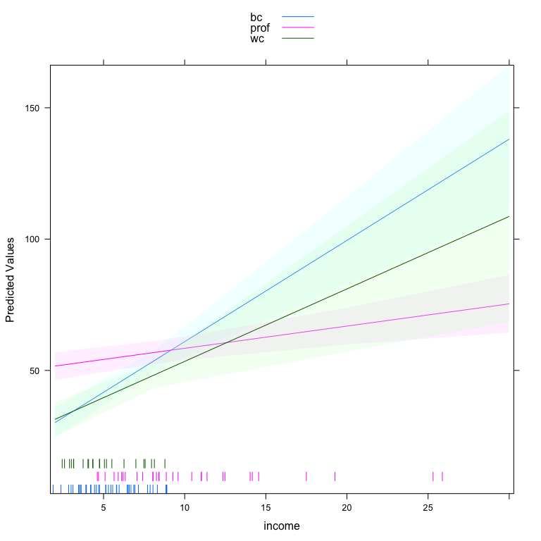
One of the benefits of this function is that it plots a rug for the quantitative variable at each level of the qualitative variable. This indicates, particularly in this case, that the density of income depends very much on occupation type. The other side of the interaction is also important. We can plot that side of the interaction by specifying type='facs'.
lattice::trellis.par.set(strip.background=list(col="gray75"))
out <- intQualQuant(int.mod1, c("income", "type"), type="facs", plot=TRUE)
update(out, layout=c(3,1))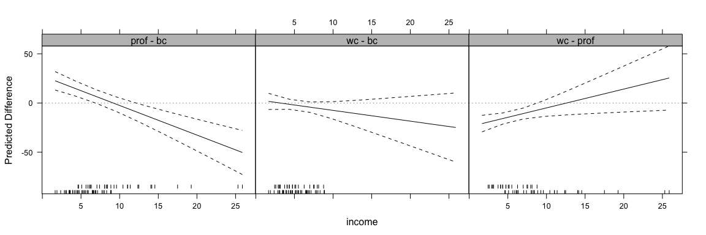
This shows the effect of moving from every level to every other level in the qualitative variable for all values of the quantitative variable. Here, the rug plots at the bottom help identify ranges of the quantitative variable where inference is safe.
Next, we can look at interactions between two quantitative variables.
int.mod2 <- lm(prestige ~ income*education + type + women, data=Prestige)
summary(int.mod2)
#>
#> Call:
#> lm(formula = prestige ~ income * education + type + women, data = Prestige)
#>
#> Residuals:
#> Min 1Q Median 3Q Max
#> -15.2186 -5.0131 0.6606 4.8713 16.9888
#>
#> Coefficients:
#> Estimate Std. Error t value Pr(>|t|)
#> (Intercept) -21.53038 8.09938 -2.658 0.00928 **
#> income 4.37994 1.04769 4.181 6.68e-05 ***
#> education 5.25108 0.78217 6.713 1.59e-09 ***
#> typeprof 4.57575 3.76607 1.215 0.22751
#> typewc -4.81161 2.59942 -1.851 0.06741 .
#> women 0.03947 0.03059 1.290 0.20019
#> income:education -0.24147 0.07363 -3.280 0.00147 **
#> ---
#> Signif. codes: 0 '***' 0.001 '**' 0.01 '*' 0.05 '.' 0.1 ' ' 1
#>
#> Residual standard error: 6.781 on 91 degrees of freedom
#> (4 observations deleted due to missingness)
#> Multiple R-squared: 0.8524, Adjusted R-squared: 0.8427
#> F-statistic: 87.58 on 6 and 91 DF, p-value: < 2.2e-16There are a couple of different things we can do here. The most recent advice comes from Berry, Golder and Milton’s 2012 piece in the Journal of Politics. First, suggested making conditional effects plots. The DAintfun2 function in the DAMisc package does this for you.
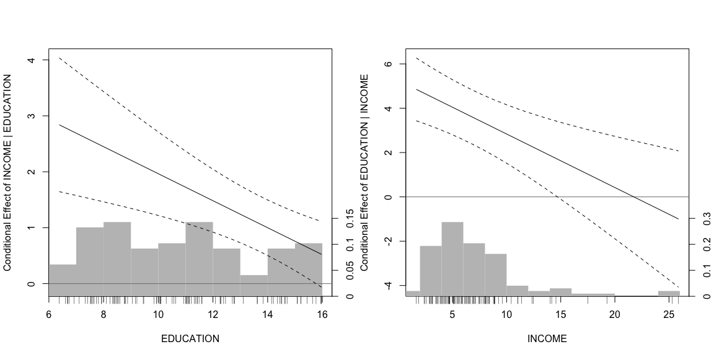
Here, the conditional effect of one variable is plotted on the y-axis and the conditioning variable is plotted on the x-axis. The histogram gives the density of the conditioning variable. The scale.hist argument determines vertically how much of the plotting region the histogram occupies. The axis numbers on the right-hand side belong to the histogram and the ones on the left belong to the conditional effect. There are two other visualizations that might be useful in other circumstances. The first, produced with DAintfun3 provides the conditional effect of one variable at the mean and the mean±SD of the other variable. Here’s what that looks like in this case.
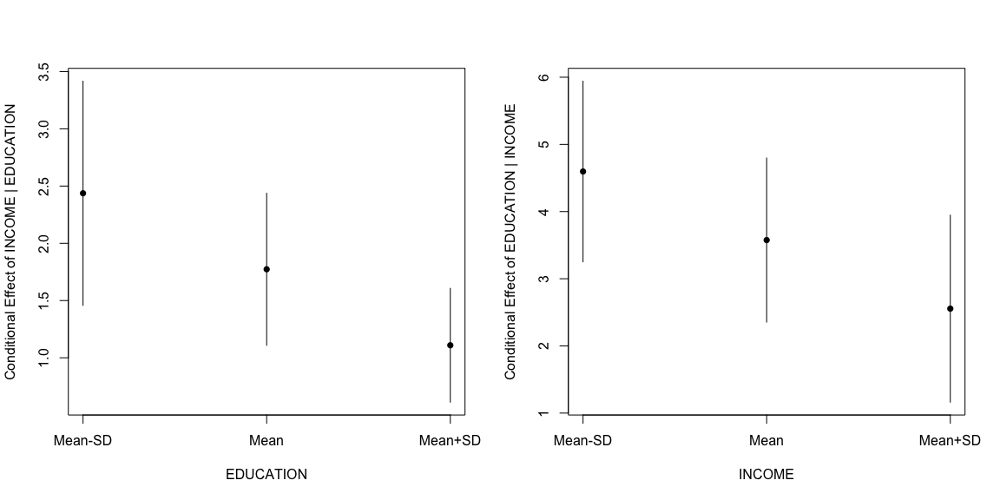
The third method, with DAintfun produces a single 3-D surface plot where the areas of higher bivariate density are shaded in lighter colors.
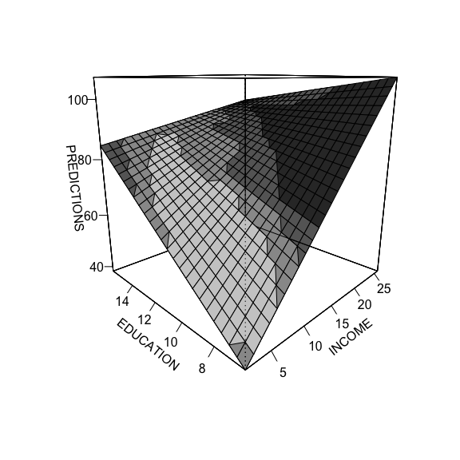
Finally, there are two more functions that can be used here. The changeSig function calculates where conditional effects change from significant to insignificant. Here’s an example using the model above.
changeSig(int.mod2, c("income", "education"))
#> LB for B(income | education) = 0 when education=15.7712 (97th pctile)
#> UB for B(income | education) = 0 when education=25.5111 (> Maximum Value in Data)
#> LB for B(education | income) = 0 when income=14.6971 (96th pctile)
#> UB for B(education | income) = 0 when income=46.3725 (> Maximum Value in Data)This function shows when the lower and upper confidence bounds cross zero and what percentile of the conditioning variable’s distribution that is.
Finally, following Berry, Golder and Milton (2012), the function BGMtest tests all of the hypotheses they specify.
Non-linear Model Interactions
The work on interactions has a long history. Until quite recently, the work by Ai, Norton and Wang was the most prominent in this area. In recent years, political scientists - Bill Berry, Jacqueline DeMeritt, Justin Esarey and Carlisle Rainey have all made contributions here.
There are two related questions:
- Is a product term necessary for an interaction to exist?
- How to test for an interaction?
Rainey’s answer to the first problem is compelling. He argues that unless there is strong theory to suggest that the product term is not necessary, then it should be included. The counterintuitive part of the argument is that rather than the product term enhancing our ability to find an interaction, the product term actually can mitigate the effect of compression reducing the strength of the interaction if the data is consistent with a more additive process.
The DAMisc package has two functions that can help. The intEff function is a more or less direct port of the code that Norton, Wang and Ai proposed in their article in the Stata Journal. I prefer the secondDiff function that directly calculates second differences and uses a parametric bootstrap to find confidence intervals for the calculated quantities. We will demonstrate with the conflictData from the clarkeTest package.
data(conflictData, package="clarkeTest")
conflictData$rgdpna_pc <- conflictData$rgdpna_pc/1000
bin.mod1 <- glm(conflict_binary ~ log(pop) + rgdpna_pc +
polity2, data=conflictData,
family=binomial)
bin.mod2 <- glm(conflict_binary ~ log(pop) + rgdpna_pc *
polity2, data=conflictData,
family=binomial)In the models above, bin.mod1 has the terms linearly and additively entered in the model. bin.mod2 includes a product term between rgdpna_pc and polity2. We could test to see whether the second model fits better than the first.
anova(bin.mod1, bin.mod2, test='Chisq')
#> Analysis of Deviance Table
#>
#> Model 1: conflict_binary ~ log(pop) + rgdpna_pc + polity2
#> Model 2: conflict_binary ~ log(pop) + rgdpna_pc * polity2
#> Resid. Df Resid. Dev Df Deviance Pr(>Chi)
#> 1 4377 3969.2
#> 2 4376 3968.5 1 0.68458 0.408The χ2 in the analysis of deviance test would suggest that both models fit pretty much the same. Thus, there may not be a reason to prefer the product term model. Now, however, we could use the secondDiff function to figure out whether there is a significant conditional effect (independent of whether the product term is in the model). The secondDiff function, by default, uses the average marginal effect approach to calculating the difference. Here it is for the model without the product term.
sd1 <- secondDiff(bin.mod1, c("rgdpna_pc", "polity2"), conflictData)
summary(sd1)
#> Second Difference Using the Average Marginal Effect Approach
#>
#> Overall:
#> Average Second Difference: 0.049, 95% CI: (0.001,0.097)
#>
#> Individual:
#> Significant Negative Individual Second Differences: 0
#> Significant Positive Individual Second Differences: 4381
#> Inignificant Individual Second Differences: 0Here all of the second differences are positive. The average second difference is 0.049, meaning that the difference in probability of conflict is .05 bigger for a change in GDP when democracy is high than when democracy is low. We could plot out all of the individual confidence intervals as well.
Now we could do the same thing for the model with the product term
sd2 <- secondDiff(bin.mod2, c("rgdpna_pc", "polity2"), conflictData)
summary(sd2)
#> Second Difference Using the Average Marginal Effect Approach
#>
#> Overall:
#> Average Second Difference: 0.065, 95% CI: (0.000,0.127)
#>
#> Individual:
#> Significant Negative Individual Second Differences: 0
#> Significant Positive Individual Second Differences: 4307
#> Inignificant Individual Second Differences: 74Note here, that some of the individual second differences are insignificant, but overall, the picture looks pretty similar - the average second differences is 0.065 (slightly bigger than before) and significantly different from zero. In this case, including the product term doesn’t actually change what we think about the interaction much at all.
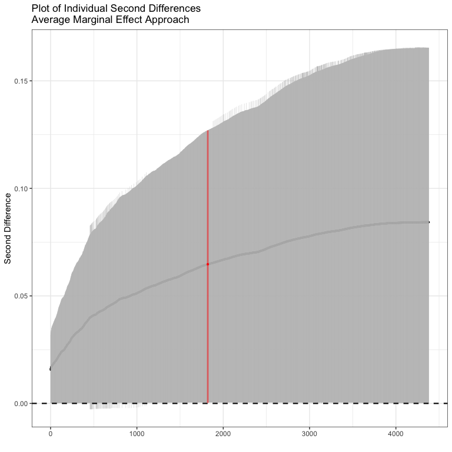
Non-linear Model Post-Estimation Tools
Probably the largest group of functions in the DAMisc package are for post-estimation evaluation of non-linear models - particularly binomial (and to a lesser degree, poisson) GLMs and models for ordered and unordered categorical dependent variables. We’ll talk about each kind in turn.
Binomial GLMs
Using the model discussed above, we can test out the tools for binomial GLMs. Just to remind, we’ll use the following:
data(conflictData, package="clarkeTest")
conflictData$rgdpna_pc <- conflictData$rgdpna_pc/1000
bin.mod1 <- glm(conflict_binary ~ log(pop) + rgdpna_pc +
polity2, data=conflictData,
family=binomial)One of the first things we can do is to figure out how well the model fits. We can do this with the binfit function:
binfit(bin.mod1)
#> Names1 vals1 Names2 vals2
#> 1 Log-Lik Intercept Only: -2322.451 Log-Lik Full Model: -1984.578
#> 2 D(4377): 3969.157 LR(3): 675.745
#> 3 Prob > LR: 0.000
#> 4 McFadden's R2: 0.145 McFadden's Adk R2: 0.144
#> 5 ML (Cox-Snell) R2: 0.143 Cragg-Uhler (Nagelkerke) R2: 0.219
#> 6 McKelvey & Zavoina R2: 0.390 Efron's R2: 0.145
#> 7 Count R2: 0.783 Adj Count R2: 0.026
#> 8 BIC: 4002.697 AIC: 3977.157This function produces a bunch of scalar measures of fit for binary models. If you are unfamiliar with some of these, see Long (1997) or Long and Freese (2005) for a discussion. You can also use the pre function to find the proportional reduction in error and the expected proportional reduction in error (Herron, 1999).
pre(bin.mod1)
#> mod1: conflict_binary ~ log(pop) + rgdpna_pc + polity2
#> mod2: conflict_binary ~ 1
#>
#> Analytical Results
#> PMC = 0.777
#> PCP = 0.783
#> PRE = 0.026
#> ePMC = 0.654
#> ePCP = 0.705
#> ePRE = 0.148By default, the pre function tests the current model relative to the null model. However, you can also use it to evaluate two differently specified models against each other. The sim argument allows you to produce parametric bootstrap confidence intervals for the PRE and ePRE.
pre(bin.mod1, sim=TRUE, R=1500)
#> mod1: conflict_binary ~ log(pop) + rgdpna_pc + polity2
#> mod2: conflict_binary ~ 1
#>
#> Analytical Results
#> PMC = 0.777
#> PCP = 0.783
#> PRE = 0.026
#> ePMC = 0.654
#> ePCP = 0.705
#> ePRE = 0.148
#>
#> Simulated Results
#> median lower upper
#> PRE 0.027 0.009 0.058
#> ePRE 0.147 0.123 0.172The glmChange function uses the marginal effects at reasonable values approach to calculating the change in predicted probability for a change in each explanatory variable.
glmChange(bin.mod1, data=conflictData, diffchange="sd", sim=TRUE)
#> $diffs
#> min max diff lower upper
#> pop 0.03179818 0.4568626 0.42506441 0.39457088 0.456223985
#> rgdpna_pc 0.28088911 0.1332726 -0.14761653 -0.17635944 -0.118870924
#> polity2 0.21777594 0.2024958 -0.01528019 -0.03889378 0.009492247
#>
#> $minmax
#> pop rgdpna_pc polity2
#> typical 10311.00 6.2824424 3.0000000
#> min 250.00 0.1615948 -0.6042397
#> max 79969.46 14.9960241 6.6042397
#>
#> attr(,"class")
#> [1] "change"What we see above is that the effect of changing population by a standard deviation (from 250 to 79969.46), hodling rgdpna_pc constant at 6.28 and polity2 constant at 3, is to make conflict more likely by 0.425. That difference is statistically significant.
For those who would rather have the average marginal effect approach, the glmChange2 function has you covered. Here, because of the computational complexity, the function only does one variable at a time. The result for population is below:
glmChange2(bin.mod1, "pop", conflictData, "sd")
#> mean lower upper
#> pop 0.3581361 0.3299457 0.3869225Here, we can see that the effect is attenuated slightly. Changing population by a standard deviation for each individual observation produces an average effect of 0.358, which is also significantly bigger than zero.
Finally, the probci function also calculates the difference in predicted probabilities for any combination of values. For example, here’s what it looks like for rgdpna_pc and polity2:
probci(bin.mod1, conflictData, changeX=c("rgdpna_pc", "polity2"),
numQuantVals=2)
#> rgdpna_pc1 polity21 rgdpna_pc2 polity22 pred_prob lower upper
#> 1 0.1616 -10 155.9892 -10 -0.3490 -0.3779 -0.3212
#> 2 0.1616 -10 0.1616 10 -0.0486 -0.0965 0.0000
#> 3 0.1616 -10 155.9892 10 -0.3490 -0.3779 -0.3212
#> 4 155.9892 -10 0.1616 10 0.3005 0.2670 0.3365
#> 5 155.9892 -10 155.9892 10 -0.0000 -0.0001 0.0000
#> 6 0.1616 10 155.9892 10 -0.3005 -0.3365 -0.2671Here, we’re choosing 2 values of both variables. The first two columns show the values of the two variables we change from and the second two columns show the values we are changing to. The pred_prob column gives the difference in probabilities moving from the first set of values to the second. The lower and upper are the confidence bounds for the difference in probabilities.
Just like finding predicted probabilities, it’s also easy to plot the predicted probabilities using the effects package or the DAMisc package. The effects packages uses the marginal effects at reasonable values approach.
library(effects)
plot(effect("rgdpna_pc", bin.mod1, xlevels=list(rgdpna_pc = 100)),
type="response")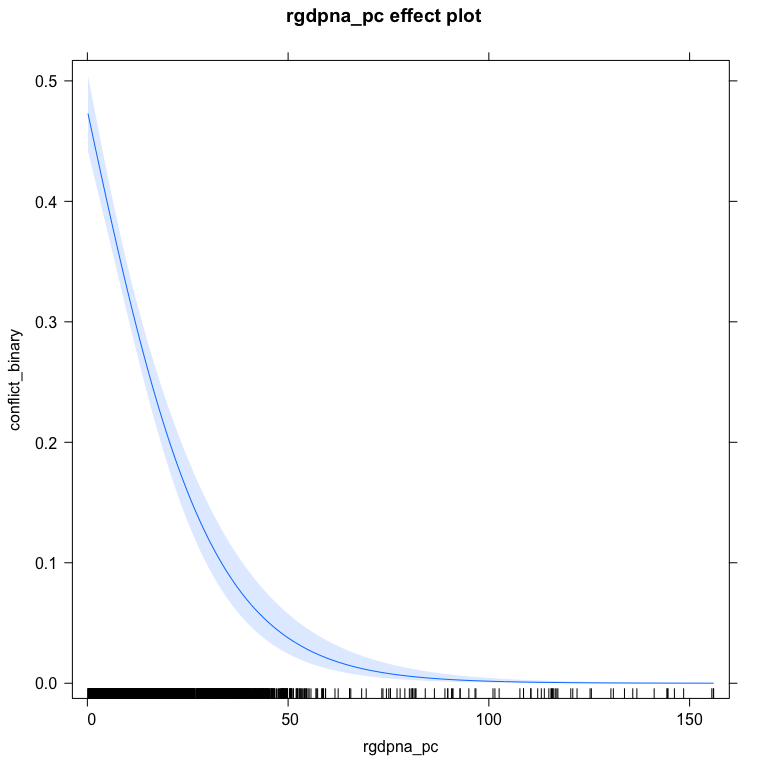
The aveEffPlot function in the DAMisc package uses the average marginal effects approach to make the same graph.
aveEffPlot(bin.mod1, "rgdpna_pc", conflictData,
nvals=50)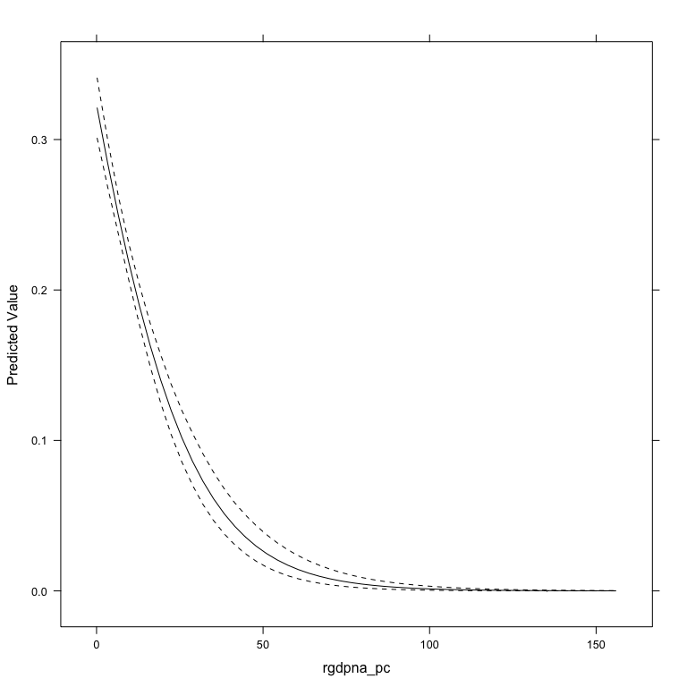
If you don’t like the lattice plot, you can specify plot=FALSE and the data will be returned.
outDat <- aveEffPlot(bin.mod1, "rgdpna_pc", conflictData,
nvals=25, plot=FALSE)
names(outDat)
#> [1] "s" "mean" "lower" "upper"
library(ggplot2)
ggplot(outDat) +
geom_ribbon(aes(x=s, ymin=lower, ymax=upper), col="gray75", alpha=.5) +
geom_line(aes(x=s, y=mean)) +
theme_bw() +
labs(x="GDP/capita", y="Predicted Probability")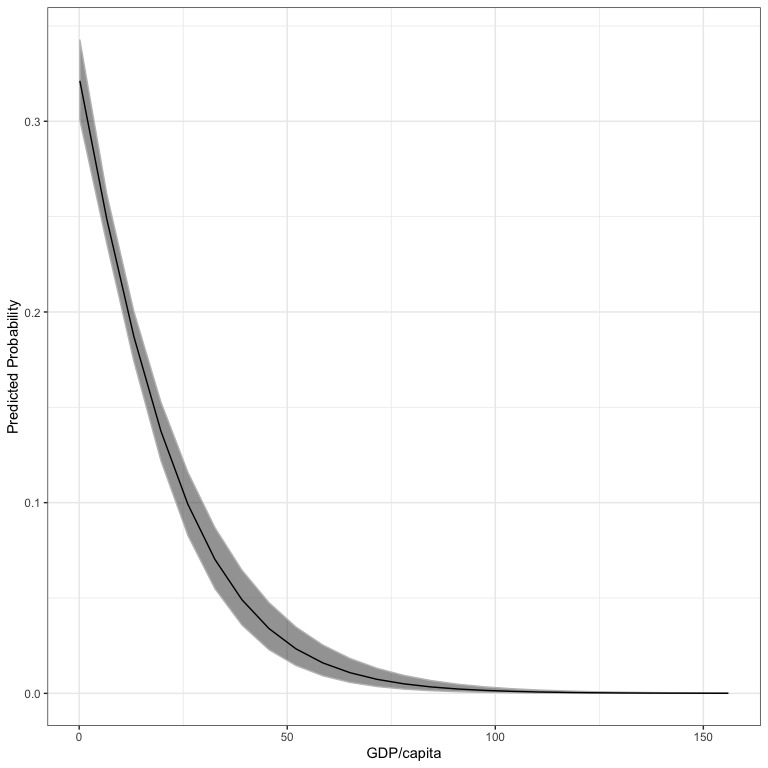
As for testing, the testNL function allows you to test whether non-linear transformations or polynomials would be better using the clarke_test function. Below, I test to see whether the log of rgdpna_pc or a cubic polynomial would be better than the original model.
testNL(bin.mod1, "rgdpna_pc", 0, 3)
#> Model1 Model2 pval preferred
#> 1 Original Power Transform 0.000 Power Transform
#> 2 Original Polynomial 0.002 Original
#> 3 Power Transform Polynomial 0.000 Power TransformIn the above, the power transform is significanly better than the original, the original is better than the polynomial model and the power transform is better than the polynomial. This means we should use the power transform in our model.
Ordinal Dependent Variable Models
The functions that evaluate and interrogate models for ordinal dependent can use both polr (MASS package).
data(conflictData, package="clarkeTest")
conflictData$Amnesty <- as.factor(conflictData$Amnesty)
ol1 <- MASS::polr(Amnesty ~ log(rgdpna_pc) + log(pop) + polity2,
data=conflictData)The ordfit function generates measures of fit for ordinal DV models:
ordfit(ol1)
#> Estimate
#> Count R2 0.408
#> Count R2 (Adj) 0.133
#> ML R2 0.284
#> McFadden R2 0.113
#> McFadden R2 (Adj) 0.112
#> McKelvey & Zavoina R2 0.288The pre function also works for these models:
pre(ol1)
#> mod1: Amnesty ~ log(rgdpna_pc) + log(pop) + polity2
#> mod2: Amnesty ~ 1
#>
#> Analytical Results
#> PMC = 0.317
#> PCP = 0.408
#> PRE = 0.133
#> ePMC = 0.250
#> ePCP = 0.308
#> ePRE = 0.077The ordChange and ordChange2 functions are the analogs of glmChange and glmChange2 from above.
print(oc1 <- ordChange(ol1, data=conflictData, diffchange="sd", sim=TRUE))
#> 1 2 3 4 5
#> rgdpna_pc 0.160* 0.305* -0.046 -0.252* -0.167*
#> pop -0.361* -0.175 0.253* 0.201* 0.082*
#> polity2 0.059* 0.071 -0.057 -0.053* -0.020*You can also print the result of this as well:
lattice::trellis.par.set(strip.background=list(col="gray75"))
out <- oc2plot(oc1)
update(out, layout=c(3,1))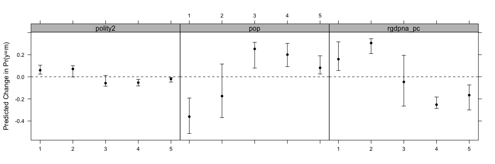
This shows how the indicated change in the variable changes the probability of being in each group. You can also use the AME approach with ordChange2.
print(oc2 <- ordChange2(ol1, "rgdpna_pc", data=conflictData, diffchange="sd"))
#> 1 2 3 4 5
#> rgdpna_pc 0.107* 0.167 0.004 -0.134* -0.143*Also, just like above, the ordAveEffPlot does something similar to the effects package, but using the AME approach.
op1 <- ordAveEffPlot(ol1, "rgdpna_pc", conflictData,
nvals=25)
update(op1, layout=c(5,1))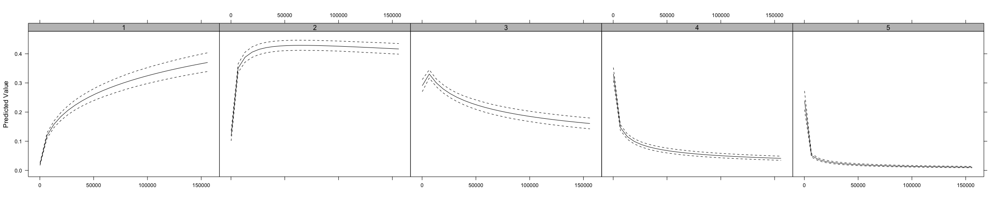
Unordered Dependent Variable Models
We can use the same model specification as above to estimate multinomial models.
data(conflictData, package="clarkeTest")
conflictData$Amnesty <- as.factor(conflictData$Amnesty)
ml1 <- nnet::multinom(Amnesty ~ log(rgdpna_pc) + log(pop) + polity2,
data=conflictData)
#> # weights: 25 (16 variable)
#> initial value 7050.947494
#> iter 10 value 6003.430441
#> iter 20 value 5533.285659
#> final value 5532.122608
#> convergedThe original model summary function isn’t all that useful because it prints the coefficient matrix separate from a matrix of standard errors. The mnlSig function prints a more useful summary:
mnlSig(ml1)
#> (Intercept) log(rgdpna_pc) log(pop) polity2
#> 2 7.757* -0.828* 0.177* -0.134*
#> 3 7.246* -1.131* 0.521* -0.186*
#> 4 3.350* -1.255* 0.960* -0.198*
#> 5 5.081* -1.416* 0.826* -0.197*The mnlfit function produces scalar measures of fit for the model:
mnlfit(ml1)
#> $result
#> Estimate p-value
#> Fagerland, Hosmer and Bonfi 379.2187628 5.503904e-61
#> Count R2 0.4462451 NA
#> Count R2 (Adj) 0.1891711 NA
#> ML R2 0.3498981 NA
#> McFadden R2 0.1456721 NA
#> McFadden R2 (Adj) 0.1424291 NA
#> Cragg-Uhler(Nagelkerke) R2 0.3690984 NA
#>
#> attr(,"class")
#> [1] "mnlfit"The pre function also works:
pre(ml1)
#> mod1: Amnesty ~ log(rgdpna_pc) + log(pop) + polity2
#> mod2: Amnesty ~ 1
#>
#> Analytical Results
#> PMC = 0.317
#> PCP = 0.446
#> PRE = 0.189
#> ePMC = 0.250
#> ePCP = 0.328
#> ePRE = 0.105The mnlChange and mnlChange2 functions work the same as the ordChnge and ordChange2 functions and have the same print method and can be used with the oc2plot function just as above.
print(mnlChange(ml1, conflictData, diffchange="sd"))
#> 1 2 3 4 5
#> rgdpna_pc 0.152* 0.271* -0.125* -0.151* -0.147*
#> pop -0.185* -0.422* 0.196* 0.318* 0.093*
#> polity2 0.080* 0.056* -0.079* -0.041* -0.016*print(mnlChange2(ml1, "rgdpna_pc", conflictData, diffchange="sd"))
#> 1 2 3 4 5
#> rgdpna_pc 0.119* 0.132* -0.071* -0.088* -0.090*The ordAveEffPlot function works here as well just as it did above.
References
Ai, Chunrong and Edward C. Norton. 2003. Interaction Terms in Logit and Probit Models. Economics Letters 80(1): 123-129.
Berry, W.D., DeMeritt, J.H.R. and Esarey, J. (2010) “Testing for Interaction in Binary Logit and Probit Models: Is a Product Term Essential?” American Journal of Political Science 54: 248-266.
Berry, W., DeMeritt, J., & Esarey, J. (2016). “Bias and Overconfidence in Parametric Models of Interactive Processes” American Journal of Political Science 60(2): 521-539.
Berry, William D., Matt Golder and Daniel Milton. (2012) “Improving Tests of Theories Positing Interaction” The Journal of Politics 74(3): 653-671.
Herron, M. 1999. “Postestimation Uncertainty in Limited Dependent Variable Models” Political Analysis 8(1): 83–98.
Long, J.S. 1997. Regression Models for Categorical and Limited Dependent Variables. Thousand Oaks, CA: Sage.
Long, J.S. and J. Freese. 2005. Regression Models for Categorical Outcomes Using Stata, 2nd ed. College Station, TX: Stata Press.
Norton, Edward C., Hua Wang and Chunrong Ai. 2004. Computing Interaction Effects and Standard Errors in Logit and Probit Models. The Stata Journal 4(2): 154-167.
Rainey, Carlisle. 2016. “Compression and Conditional Effects: A Product Term Is Essential When Using Logistic Regression to Test for Interaction.” Political Science Research and Methods 4(3): 621-639.